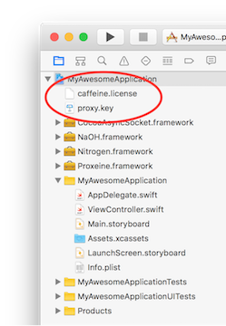

Reference
Reference
Contact our engineers at help@caffei.net for a trial.
Want to A/B Test Caffeine? Click here
Integration/Getting Started
No backend changes. Takes about 15 minutes inside Xcode. You work with three APIs inside the CaffeineHTTPProxy class. The steps are described below.
Steps to Integrate
You should have received a Caffeine bundle containing six items: four frameworks and two files (picture below) which you will copy into your application bundle. If you have not, please contact us at help@caffei.net.
- The caffeine.license file is required to use Caffeine. It contains information that uniquely identifies your organization.
- CocoaAsyncSocket.framework is an open source library that Caffeine uses for fast-UDP diagnostic logging.
- NaOH.framework (pronounced
sodium hydroxide
) is an open source library built and maintained by us - forked from libsodium, implementing Caffeine’s security. - Nitrogen.framework contains our proprietary protocol.
- Proxeine.framework is the interpreter (proxy) that converts whatever networking library is used on the client into Caffeine.
- Proxy.key contains the public key the client will use to authenticate with our proxy server.
1. Drag and drop the four frameworks into the Embedded Binaries section in Xcode (found on the project’s general tab). In the subsequent prompt, make sure to check “Copy items if needed” before pressing “Finish”.

You should now see all four frameworks present within
a) Xcode’s Project Navigator
b) The Embedded Binaries section
c) The Linked Frameworks and Libraries section
(pictured below)

2. Drag and drop the proxy.key and caffeine.license into the Xcode project and add (and copy) to the main application target. Again, ensure that “Copy items if needed” is checked in the subsequent prompt.


You should now see the two files “caffeine.license” and “proxy.key” within Xcode’s Project Navigator (pictured below)

3. In the main target’s build settings, set “Embedded Content Contains Swift Code” to Yes

4. In your App Delegate, import the Proxeine framework.
Swift:
import Proxeine
Objective-C:
#import <Proxeine/Proxeine-Swift.h>
5. Locate the application:didFinishLaunchingWithOptions: function and call the start() function:
Swift:
CaffeineHTTPProxy.start()
Objective-C:
[CaffeineHTTPProxy start];
6. Caffeine defaults to off, so no traffic will be accelerated until specific URLs or sets of URLs are specified. This is done through CaffeineHTTPProxy’s allow and deny functions.
Swift:
CaffeineHTTPProxy.allow(“http://google.com”)
Objective-C:
[CaffeineHTTPProxy allow:@”http://google.com”];
To accelerate sets of URLs use the asterisk *
to denote prefixes or suffixes.
Swift:
CaffeineHTTPProxy.allow("http://google.com/*"") //everything starting with http://google.com/
CaffeineHTTPProxy.allow("*.jpg") //all urls ENDING in .jpg
CaffeineHTTPProxy.deny("https://google.com/") // prevents HTTPS acceleration to the single URL, `https://google.com/`
Objective-C:
[CaffeineHTTPProxy allow:@”http://google.com/*"];
See CaffeineHTTPProxy’s allow: and deny: for more examples of usage.
Steps to Submit to app store
Caffeine frameworks are compiled both for simulator and device (pretty convenient for development), but iTunesConnect doesn't accept simulator slices. So, a Run Script must be added to remove the simulator slices.
The following 3 steps describe a solution.
Step #1
Install Carthage. In terminal,
brew install Carthage
Step #2
Under your application's target settings in the "Build Phases" tab, create a new "Run Script Phase"

Step #3
In your newly created Run Script, enter the following:
/usr/local/bin/carthage copy-frameworks
And for input files:
$(SRCROOT)/NaOH.framework
$(SRCROOT)/Nitrogen.framework
$(SRCROOT)/Proxeine.framework
$(SRCROOT)/CocoaAsyncSocket.framework

That will cause the simulator parts to be stripped during an archive.
If at any time you require help, please contact our engineers at help@caffei.net
About Caffeine
Caffeine is the result of many frustrated years spent developing native applications for our clients on a contracting and consulting basis. Application speed has many components, but in our experience one of the most frustrating is network latency–the performance tax you pay simply for talking on the network. Mobile engineers have control over the other factors, like client-side and server-side performance. But the network performance has remained relatively constant and elusively outside of engineering’s reach until now. Caffeine challenges the commonly held assumptions of performance in a purely software solution.
The Two Fundamental Speed Limitations in networking
- Bandwidth: bits per second of data
- Latency: time between a request and a response
Bandwidth is ultimately limited by the carrier’s networking hardware. Latency is primarily limited by two features: the speed of electricity through electrical wire—very roughly ½ the speed of light in a vacuum (1/2c), and the geographic efficiency of the network path (straightness of line). Because carriers define speed limits, people commonly assume that performance can’t improve. But more efficient protocols require less bandwidth and less latency, even if the speed limits are the same. Caffeine, a “pure software” solution, aggressively targets both fundamental limits –the bandwidth and latency efficiency of the request. We send less data and incur fewer round-trips than the equivalent HTTPS implementation. The exact techniques we use to do this are proprietary, but the underlying math is simple.
An Example
If we allow that there are 6000km from Boston to Switzerland (where the server is in our search demo), and that the speed of electricity is 1/2c, then a round-trip request/response there and back again is about 20ms. If we further allow a 2x inefficiency because the networking cable is not in a straight line and that each of the 20 hops on the path add about 2ms of queuing latency then we are up to 80ms. This estimate is roughly consistent with empirical results from ping (using the ICMP). There is no reason why we could not theoretically make a request in 80ms. Quite simply, if you aren’t seeing 80ms request/response times right now, your application is traveling slower than the network speed limit allows. Caffeine technology is engineered tightly to this network speed limit. The result is a network technology that is much more efficient than traditional technology, often by a factor of 2X or more.
Datacenter-grade Communications
We are not the first people to realize this; in fact our research suggests that both Facebook and Amazon (and probably all the others) are doing things like this inside their data-centers. But their technology is kept hidden behind the firewall. Caffeine is datacenter-grade
networking that we want to make available to everyone.
An Important Detail
Caffeine runs in a very important part of your application.
If anything unexpected occurs, Caffeine will fallback to using HTTP/S where it is appropriate to do so.
The below table describes this behavior:
More technical information
A report of Caffeine’s effect on image downloading may be found here
Closing Remarks
It is after more than a year of meticulous engineering and testing that we feel comfortable inviting organizations to work with us. We take great pride in our technology, and it’s essential to us that it pushes your applications forward.
Caffeine is our craft, our art, our lives. We’re not web developers, graphic designers, or wordsmiths; we’re iOS developers, and that’s pretty much it. We do one thing, and we do it well: we build tools that allow you to create experiences on the iPhone that others write off as impossible.
As far as we know (and we don’t know everything, but we know enough), our technology is the fastest secure networking software for iOS applications in the world. We believe that we can at least double your iOS application’s network performance.
It’s an exciting time for us, and we are very fortunate to be able to collaborate with great customers to make their exceptional apps even better. We jump at the opportunity to work with organizations that share our values of both end user experience and quality software development.